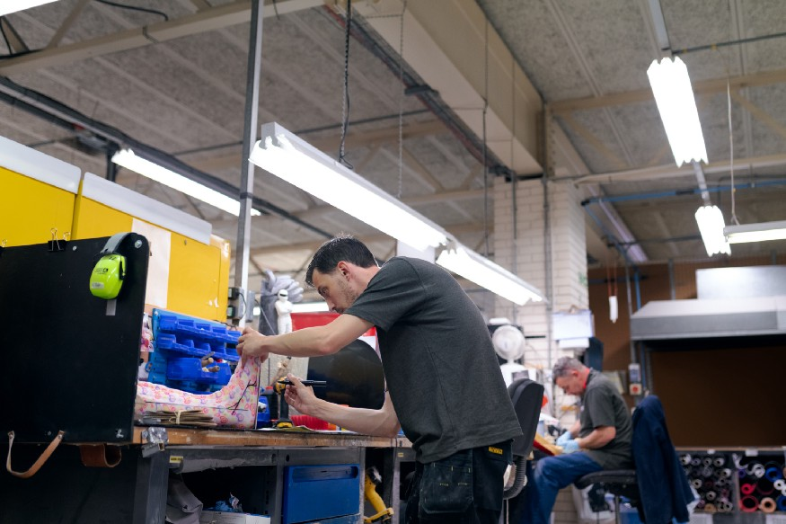
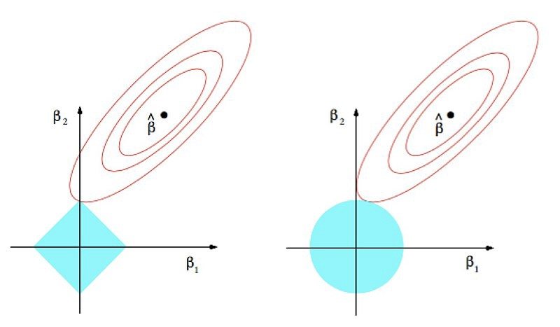
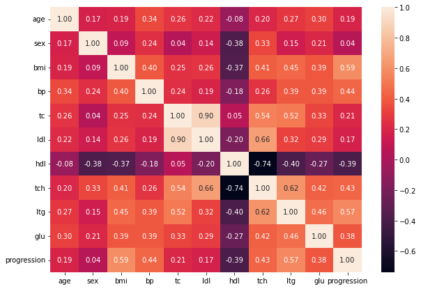
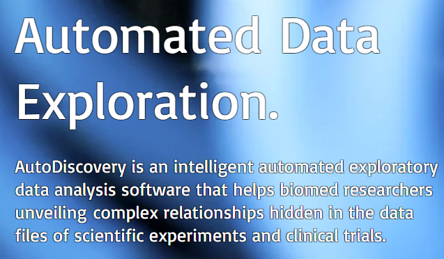

Hi, I'm Federico.
As an Engineer, I've always loved data and graphs, but when I've discovered Data Science it was love at first sight.
Also, I love helping others sharing knowledge, especially with blog posts and articles.
This is what I can do for you:
- if you are searching for a Data Scientist, then I'm here to help you gain insight from data with my expertise
- if you'd like to communicate your AI tool or project, then I can help you with my expertise as Technical Writer
MY PROJECTS
PREDICTING FETAL DISEASES WITH MACHINE LEARNING
As a fater, when I saw this dataset I had absolutely to study it. Here I've applied Machine Learning to predict possible fetal deseases.

WORLD FOOD PRODUCTION ANALYSIS
I have studied the world food production, relating it to the pollution generated and to the variation of the population.
PREDICTING DIABETES PROGRESSION WITH MACHINE LEARNING
This project is an overview of different Machine Learning for predicting diabetes progression
FOOD WASTE ANALYSIS (WITH SQL)
In this project I've hypotised a startup to solve the problem of food waste (almost) in the world.

ANALYZING WEBSCRAPED DATA
Sometimes, we'd like to takt data-driven decisions, but...
we have no data available! In this project, I've webscraped some data to analyze them.

DATA-DRIVEN STRATEGY FOR A WINE MARKETPLACE
I developed a data-driven strategy for starting a wine marketplace business.

ANOMALY DETECTION IN INDUSTRIAL PROCESSES
The "small" Italian production companies (SMEs) all have (or almost) a common characteristic: everyone knows how to do everything; or, at least, everyone is required to know how to do (more or less) everything.
In this perspective, it is legitimate to ask: is it possible to identify an operator (or operators) who carry out that particular production phase while remaining as constant as possible, in terms of processing time?
In this project, I carried out an analysis on a real industrial product, giving my personal answers to this question.
MY ARTICLES
HOW THE "5S" CAN HELP US TO KEEP THE CODE CLEAN, ORDERED AND REUSABLE
The "5S" metogology was born in industrial environments, in particular in Toyota with the famous Toyota Production System (TPS) which we Westerners then renamed to "Lean".
In this article I show how the use of "5S" can also bring benefits in software development, helping us to keep code clean, tidy and reusable.
HOW TO UNDERSTAND PRODUCTION PROCESSES BY JUST ANALYZING DATA
A study on how to use Data Science to understand production processes by analyzing data.

UNDERSTANDING L1 AND L2 REGULARIZATION
An overview of regularization methods in Linear Regression.

THE DIFFERENCE BETWEEN CORRELATION AND REGRESSION
What is correlation? How is it measured? Is it the same as regression? I wrote an article to clarify these concepts.
PUBLICATIONS
IMAGE-BASED DEFECT DETECTION IN ASSEMBLY LINE WITH MACHINE LEARNING
A study for the prediction of defects on assembly lines, using computer vision and Machine Learning
COLLABORATIONS

BUTLER SCIENTIFICS
EDUCATIVE: COURSES FOR SOFTWARE DEVELOPERS
RASGO: THE METRIC COMMAND CENTER
CONTACT ME!
Let's keep in touch! Click on the social icons to connect with me.
Want to write to me? Here's my email: